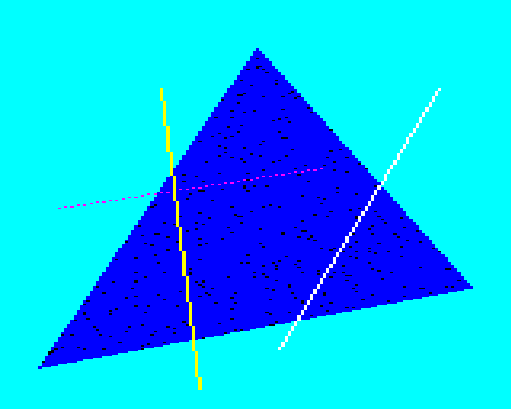
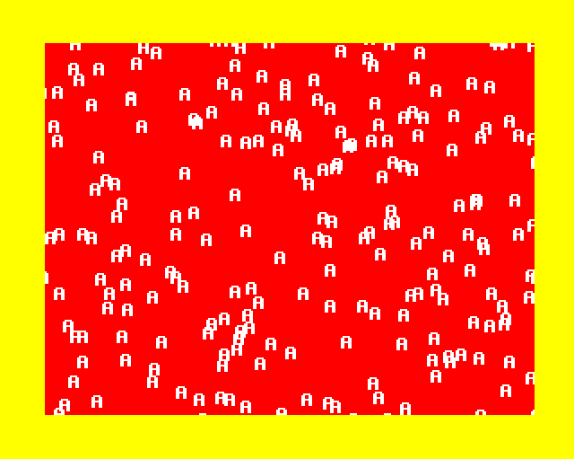

OSBYTE 134; OSWORD 13; PLOT routine; Checking graphics cursor bounds; Coordinate conversion; PLOT line; Move graphics cursor; Copy VDU variables; PLOT lateral fill; PLOT fill triangle - 1890 bytes (11.5%)
- §1. Plot routine
- §2. Plot with graphics character
- §3. plotFillTriangleLocal
- §4. plotExtensionLocal
- §5. storeAndLateralFillLeftRight
- §6. Set graphics colour and GCOL mode bytes
- §7. plotType0to63
- §8. plotPointAndMove
- §9. plotMoveGraphicsCursorInAbsolutePixels
- §10. copyPlotParametersToGraphicsCursorPixelPosition
- §11. copyParameterPointToDestinationY
- §12. Plot one pixel of a character
- §13. Plots a single point
- §14. Plots a filled whole byte (as part of a lateral fill)
- §15. Check that the graphics cursor is within the graphics window
- §16. Check coordinate of a point is in the window bounds (horizontal or vertical)
- §17. Convert external absolute coordinates to pixels
- §18. Convert external relative coordinates to pixels
- §19. Converts the vdu queue parameter to absolute coordinates and divides by two
- §20. Divides the signed 16 bit coordinate value by two
- §21. Convert pixel coordinates to external absolute coordinates
- §22. Plot a line or a dotted line
- §23. Move up one pixel (in the non-dominant axis)
- §24. Move down one pixel (in the non-dominant axis)
- §25. Move right one pixel (in the non-dominant axis)
- §26. Move left one pixel (in the non-dominant axis)
- §27. Move up one pixel (in the dominant axis)
- §28. Move right one pixel (in the dominant axis)
- §29. plotLineCheckForTermination
- §30. moveGraphicsCursorAddressUpOneCharacterCell
- §31. Update the mask value, and move graphics cursor address on to next cell to the right
- §32. Update the mask value, and move graphics cursor address on to previous cell to the left
- §33. Initialise delta values to (current cursor - params position)
- §34. Coordinate subtraction
- §35. Initialise line drawing variables
- §36. Line Initialisation
- §37. Absolute value
- §38. Copy eight bytes (four coordinates) of VDU variables
- §39. copyTwoBytesWithinVDUVariablesToPlotLineTerminationValue
- §40. Copy two bytes (one coordinate) of VDU variables
- §41. copyGraphicsCursorPixelPositionToWorkspaceABCD
- §42. copyGraphicsCursorPixelPosition
- §43. Copy four bytes (e.g
- §44. Copy a number of bytes in VDU variables
- §45. Negate the sixteen bit value in A and Y
- §46. checkPixelIsBackgroundColour
- §47. outsideBoundaries
- §48. Lateral fill left and right
- §49. lateralFillLeftNearlyDone
- §50. lateralFillRightNearlyDone
- §51. setNextPixelPosition
- §52. lateralFillRightPartialByte
- §53. lateralFillRightGetMaskLoop
- §54. lateralFillRightGetMask
- §55. lateralFillLeftPartialByte
- §56. lateralFillLeftGetMaskLoop
- §57. Get width of parameter point to graphics window edge
- §58. Set parameter X coordinate to the given distance from the left/right edge of the window
- §59. OSWORD 13 - Read last two graphic cursor positions
- §60. Fill triangle
- §61. Sort the parameter point and the old graphics cursor point, sorting by Y coordinate
- §62. Sort one point with another, sorting by Y coordinate
- §63. OSBYTE 134 - Read text cursor position
- §64. Fill half a triangle
- §65. Fill a single horizontal row
- §66. Calculate leftmost byte
- §67. Update one edge when filling a triangle

The plot routine is a multi-purpose tool for drawing graphics. It renders points, lines, dotted lines, filled triangles, and single horizontal line fills. It can also just move the current graphics cursor position. The lower three bits of the plot type hold plot options: Plot Options: 0 Move relative to last point 1 Draw relative to last point in foreground colour 2 Draw relative to last point in inverse colour 3 Draw relative to last point in background colour 4 Move absolute 5 Draw absolute in foreground colour 6 Draw absolute in inverse colour 7 Draw absolute in background colour --------------------------------------------------------------------------------------- PLOT TYPE RANGE IN BINARY BITS3-6 DESCRIPTION RANGE abcdefgh-abcdefgh bcde --------------------------------------------------------------------------------------- 0-7 00000000-00000111 0000 Move/Draw line with standard options 0-7 8-15 00001000-00001111 0001 As 0-7 but with the last point in a line omitted when plotting with GCOL mode 3 (EOR) or 4 (INVERT) 16-23 00010000-00010111 0010 As 0-7 but with a dotted line 24-31 00011000-00011111 0011 As 0-7 but with a dotted line and the last point in a line omitted when plotting with GCOL mode 3 (EOR) or 4 (INVERT) 32-39 00100000-00100111 0100 RESERVED for future expansion 40-47 00101000-00101111 0101 RESERVED for future expansion 48-55 00110000-00110111 0110 RESERVED for future expansion 56-63 00111000-00111111 0111 RESERVED for future expansion 64-71 01000000-01000111 1000 As 0-7 but only a single point is plotted 72-79 01001000-01001111 1001 As 0-7 but fill one line horizontally left and right 80-87 01010000-01010111 1010 As 0-7 but fill a triangle 88-95 01011000-01011111 1011 As 0-7 but fill one line horizontally right 96-103 01100000-01100111 1100 RESERVED for future expansion 104-111 01101000-01101111 1101 RESERVED for future expansion 112-119 01110000-01110111 1110 RESERVED for future expansion 120-127 01111000-01111111 1111 RESERVED for future expansion 128-255 10000000-11111111 xxxx RESERVED for future expansion --------------------------------------------------------------------------------------- Coordinate Systems The standard graphics coordinate system ranges from (0,0) at the bottom left of the screen to (1280 x 1024) at the top right. This coordinate range represents the entire screen regardless of the actual number of pixels available on screen. The graphics window origin can be changed to specify where a pixel drawn at (0,0) actually appears on the screen. This is a translation of the coordinate system. These resolution independent coordinates are called 'external' coordinates in this document. When calling the OS, external coordinates can optionally be specified 'relative' to the last point plotted. Coordinates are also always specified relative to the current graphics window origin. When translated into full screen coordinates these are known here as 'absolute' coordinates. Within OS routines absolute coordinates are scaled down to a pixel based scale. These are called 'pixel' coordinates. Pixel coordinates are never 'relative' coordinates in the sense above, but that doesn't stop OS routines temporarily storing the difference between two pixel based coordinates as part of its calculations of course. Conversions between the coordinate systems are done via: .plotConvertExternalAbsoluteCoordinatesToPixels .plotConvertExternalRelativeCoordinatesToPixels .convertPixelGraphicsCoordinatesToExternal
.vdu25ParameterPlotType = .vduQueueEndByte - 4 .vdu25ParameterXLow = .vduQueueEndByte - 3 .vdu25ParameterXHigh = .vduQueueEndByte - 2 .vdu25ParameterYLow = .vduQueueEndByte - 1 .vdu25ParameterYHigh = .vduQueueEndByte .vdu25Plot = $d060 LDX #.vdu25ParameterXLow - .vduVariablesStart X is offset to X Coordinate (low) JSR .plotConvertExternalRelativeCoordinatesToPixels translate coordinates LDA .vdu25ParameterPlotType get plot type CMP #4 check for plot type four (move absolute) BEQ .plotMoveGraphicsCursorInAbsolutePixels if (plot type is four) then branch (move absolute) LDY #5 Y=5 AND #3 mask only bits 0 and 1 BEQ + if (result is 0) then branch (it's a move operation) LSR check bit zero BCS .plotWithGraphicsColour if (plot option needs foreground or background graphics colour) then branch DEY Y=4 ('inverse' plot option) BNE + ALWAYS branch. The logic inverse colour must be wanted
§2. Plot with graphics character.
On Entry: A=0 it's a foreground colour A=1 it's a background colour
.plotWithGraphicsColour = $d078 TAX LDY .vduForegroundGCOLMode,X get foreground or background graphics PLOT mode (into Y) LDA .vduForegroundGraphicsColour,X } TAX } get foreground or background } graphics colour (into X) + JSR .setGraphicsColourMaskXY set up colour masks in .vduGraphicsColourByteOR/EOR LDA .vdu25ParameterPlotType get plot type BMI .plotExtensionLocal if (128-255) then branch (it's RESERVED for future expansion) deal with plot 0-127 ASL bcdefgh0 BPL .plotType0to63 if (bit 7 is now 0, i.e. plot type is 0-63) then branch deal with plot 64-127 AND #%11110000 bcde0000 ASL cde00000 BEQ .plotPointAndMove if (zero) then branch (plot type 64-71 was called, single point plot) deal with plot 72-127 EOR #%01000000 cDe00000 (inverted bit d) BEQ .plotFillTriangleLocal if (bit 'D' clear; i.e. bit 'd' set) then branch (plot type 80-87, fill triangle) deal with plot 72-79 or 88-127 PHA push cDe00000 JSR .copyPlotParametersToGraphicsCursorPixelPosition copy parameters, setting XY in current graphics coordinates PLA get back cDe00000 EOR #%01100000 cdE00000 (invert bit D back to d, and invert bit e) BEQ .storeAndLateralFillLeftRight if (cdE00000 == 00000000) (ie. cde == 001) then branch (type is 72-79, it's a lateral fill left/right) deal with plot 88-127 CMP #%01000000 if (cdE00000 == 01000000) (ie. cde == 011) then type is 88-95 (it's a lateral fill right) BNE .plotExtensionLocal otherwise branch (RESERVED for future expansion) deal with plot 88-95 .plotLateralFillRight LDA #2 A=2 STA .vduTempStoreDC .vduTempStoreDC = 2 JMP .lateralFillRight lateral fill right
.plotFillTriangleLocal = $d0a8 JMP .plotFillTriangle to fill triangle routine
.plotExtensionLocal = $d0ab JMP .vduPlotExtension VDU extension access entry
§5. storeAndLateralFillLeftRight.
.storeAndLateralFillLeftRight = $d0ae STA .vduTempStoreDC .vduTempStoreDC = 0 JMP .lateralFillLeftRight lateral fill left and right
§6. Set graphics colour and GCOL mode bytes.
When writing graphics pixels to the screen, two bytes are used to adjust the byte to write based on the current colour and GCOL mode. This routine sets these two bytes .vduGraphicsColourByteOR and .vduGraphicsColourByteEOR GCOL Mode --------- 0 = Normal Mode: Sets the pixel to the current colour 1 = OR Mode: Sets the pixel to the current colour OR-ed with the colour on screen 2 = AND Mode: Sets the pixel to the current colour AND-ed with the colour on screen 3 = EOR Mode: Sets the pixel to the current colour EOR-ed with the colour on screen 4 = Invert Mode: Inverts the colour already on screen Suppose 'C' is the byte that when written to the screen sets each pixel of the byte to the current graphics colour. Then the two bytes are set as follows: ------------------------------------------------------------------------ 0=Normal Mode | .vduGraphicsColourByteOR = (C OR $FF) EOR $00 = $FF | .vduGraphicsColourByteEOR = (C OR $00) EOR $FF = C EOR $FF ------------------------------------------------------------------------ 1=OR Mode | .vduGraphicsColourByteOR = (C OR $00) EOR $00 = C | .vduGraphicsColourByteEOR = (C OR $FF) EOR $FF = 0 ------------------------------------------------------------------------ 2=AND Mode | .vduGraphicsColourByteOR = (C OR $00) EOR $FF = C EOR $FF | .vduGraphicsColourByteEOR = (C OR $00) EOR $FF = C EOR $FF ------------------------------------------------------------------------ 3=EOR Mode | .vduGraphicsColourByteOR = (C OR $FF) EOR $FF = 0 | .vduGraphicsColourByteEOR = (C OR $00) EOR $00 = C ------------------------------------------------------------------------ 4=Invert Mode | .vduGraphicsColourByteOR = (C OR $FF) EOR $FF = 0 | .vduGraphicsColourByteEOR = (C OR $FF) EOR $00 = $FF ------------------------------------------------------------------------ When writing a pixel, start with a byte 'B', just the bits required to set one pixel to white. Then the pixel is written like so: temp = (B AND .vduGraphicsColourByteOR) OR (current screen byte) new screen byte = (.vduGraphicsColourByteEOR AND B) EOR temp [A quirk: This routine is called with Y=5 for a relative move PLOT operation, but as there's nothing to draw, the results are unused in this case.] On Entry: X = colour byte to set Y = GCOL Mode (0=Normal, 1=OR, 2=AND, 3=EOR, 4=Invert) On Exit: .vduGraphicsColourByteOR / EOR hold the appropriate mask values
.setGraphicsColourMaskXY = $d0b3 TXA A=X ORA .gcolPlotOptionsTable,Y OR with GCOL plot options table byte EOR .gcolPlotOptionsTable + 1,Y EOR with following byte STA .vduGraphicsColourByteOR and store it TXA A=X ORA .gcolPlotOptionsTable - 1,Y EOR .gcolPlotOptionsTable + 4,Y STA .vduGraphicsColourByteEOR masks are stored in .vduGraphicsColourByteOR/EOR RTS
Continue processing of a PLOT command, where the plot type is in the range 0-63
.plotType0to63 = $d0c6 ASL cdefgh00 BMI .plotExtensionLocal if (options are in range 32-63) then branch (not implemented) ASL defgh000 ASL efgh0000 BPL + if (still +ve; type is 0-7 or 16-23) then branch (skips plot point) JSR .plotPoint type is 8-15 or 24-31. We want to omit the last point when drawing in invert mode, so we do this by displaying a point, which will get inverted (erased) again in the normal course of drawing the line. + JSR .plotLine draw a line or dotted line JMP .plotMoveGraphicsCursorInAbsolutePixels move the graphics cursor
Plot a single point and move the graphics cursor position
.plotPointAndMove = $d0d6 JSR .plotPoint display a point fall through...
§9. plotMoveGraphicsCursorInAbsolutePixels.
Move the current graphics cursor position, to new absolute pixel coordinates given by the vdu25Parameters.
.plotMoveGraphicsCursorInAbsolutePixels = $d0d9 JSR .exchangeGraphicsCursorWithOldPosition swap current and last graphics position. The current position becomes the previous position. fall through...
§10. copyPlotParametersToGraphicsCursorPixelPosition.
.copyPlotParametersToGraphicsCursorPixelPosition = $d0dc LDY #.vduGraphicsCursorPixelsXLow - .vduVariablesStart destination is the graphics cursor position in pixels fall through...
§11. copyParameterPointToDestinationY.
.copyParameterPointToDestinationY = $d0de LDX #.vdu25ParameterXLow - .vduVariablesStart source is the position coordinate on the VDU queue JMP .copyFourBytesWithinVDUVariables copy four bytes
§12. Plot one pixel of a character.

When drawing a character at the graphics cursor, this draws an individual pixel of that character. It uses the current graphics cursor position as the position to plot. Each pixel is tested to see if it's within the bounds of the current graphics window, so characters can be partially drawn.
.plotAPixelInACharacter = $d0e3 LDX #.vduGraphicsCursorPixelsXLow - .vduVariablesStart JSR .checkPointXInBoundsAndSetScreenAddresses calculate position BEQ .plotPointWithinBounds if (within bounds) then branch RTS
This checks the point against the graphics window, gets the screen address details, then renders the pixel by writing to the screen address, applying the colour masks and plot type. On Entry: X holds the offset into the VDU variables for four bytes holding the position to plot at.
.plotPoint = $d0eb JSR .checkParameterInBoundsAndSetScreenAddresses check in bounds and set up screen addresses BNE + if (A is not zero) then branch (return) .plotPointWithinBounds = $d0f0 LDY .vduGraphicsCursorVerticalOffsetInCell get current graphics scan line .plotPointWithinBoundsAtY = $d0f3 LDA .vduCurrentPlotByteMask AND .vduGraphicsColourByteOR ORA (.vduScreenAddressOfGraphicsCursorCellLow),Y STA .vduTempStoreDA LDA .vduGraphicsColourByteEOR AND .vduCurrentPlotByteMask EOR .vduTempStoreDA STA (.vduScreenAddressOfGraphicsCursorCellLow),Y put it back again + RTS
§14. Plots a filled whole byte (as part of a lateral fill).
On Entry: Y is the vertical offset within a character cell (0-7)
.plotByte = $d104 LDA (.vduScreenAddressOfGraphicsCursorCellLow),Y ORA .vduGraphicsColourByteOR EOR .vduGraphicsColourByteEOR STA (.vduScreenAddressOfGraphicsCursorCellLow),Y RTS
§15. Check that the graphics cursor is within the graphics window.
On Exit: .vduTempStoreDA is zero if the point is within the graphics window, or the four low bits indicate which regions failed: %0000 success (point is within window) %0001 graphics cursor X is left of the left edge of the graphics window %0010 graphics cursor X is right of the right edge of the graphics window %0100 graphics cursor Y is below the bottom edge of the graphics window %1000 graphics cursor Y is above the top edge of the graphics window
.checkGraphicsCursorIsWithinGraphicsWindow = $d10d LDX #.vduGraphicsCursorPixelsXLow - .vduVariablesStart X is the offset to check the graphics cursor .checkPointXIsWithinGraphicsWindow = $d10f LDY #0 STY .vduTempStoreDA .vduTempStoreDA is initialised to zero (stores the error code) LDY #2 Y is the index to check the vertical bounds of the graphics window JSR .checkPointIsWithinWindowHorizontalOrVertical check graphics cursor is within window vertically ASL .vduTempStoreDA } Shift up error results two bits to } make room for the next horizontal } test results ASL .vduTempStoreDA } DEX DEX reduce index by two to check the X position LDY #0 Y is the index to check the horizontal bounds of the graphics window JSR .checkPointIsWithinWindowHorizontalOrVertical check graphics cursor is within window horizontally INX } INX } Restore X to initial value LDA .vduTempStoreDA A = error code (0,1,2,4,5,6,8,9,10) depending on which bounds are exceeded RTS
§16. Check coordinate of a point is in the window bounds (horizontal or vertical).
On Entry: X is the offset to the coordinate to check minus two bytes Y is the offset to the second variable to check (0 for horizontal or 2 for vertical) On Exit: .vduTempStoreDA is the error code (0 = no error, 1 = first check failed, 2 = second check failed) Zero flag set if no error
.checkPointIsWithinWindowHorizontalOrVertical = $d128 LDA .vduVariablesStart + 2,X } Subtract two sixteen bit } variables, compare the results. CMP .vduVariablesStart + 0,Y } if var[X+2,X+3] < var[Y,Y+1] then } error LDA .vduVariablesStart + 3,X } SBC .vduVariablesStart + 1,Y } BMI .oneError branch if error LDA .vduVariablesStart + 4,Y } Subtract two sixteen bit } variables, compare the results. CMP .vduVariablesStart + 2,X } if var[Y+4,Y+5] < var[X+2,X+3] } then error LDA .vduVariablesStart + 5,Y } SBC .vduVariablesStart + 3,X } BPL + if (no violation) then branch (exit) INC .vduTempStoreDA increment error code .oneError = $d146 INC .vduTempStoreDA increment error code + RTS
§17. Convert external absolute coordinates to pixels.
Convert external, absolute coordinates to pixels (horizontal and vertical) On Entry: X is the offset in vdu variables to the coordinate to convert
.plotConvertExternalAbsoluteCoordinatesToPixels = $d149 LDA #$FF A=$FF to ensure absolute coordinates BNE + ALWAYS branch
§18. Convert external relative coordinates to pixels.
Convert pair of external coordinates to pixels (horizontal and vertical) On Entry: X is the offset in vdu variables to the coordinate to convert
.plotConvertExternalRelativeCoordinatesToPixels = $d14d LDA .vdu25ParameterPlotType get first parameter in plot + STA .vduTempStoreDA store in .vduTempStoreDA LDY #2 Y=2 (for vertical coordinate) JSR .convertExternalRelativeCoordinateToAbsoluteAndDivideByTwo convert JSR .signedDivideCoordinateByTwo divide by 2 again to convert 1023 to 0-255 for pixels LDY #0 Y=0 (for horizontal coordinate) DEX DEX X-=2 JSR .convertExternalRelativeCoordinateToAbsoluteAndDivideByTwo convert LDY .vduPixelsPerByteMinusOne get number of pixels per byte (-1) 7 for MODE 0 3 for MODE 1 1 for MODE 2 0 for MODE 3 7 for MODE 4 3 for MODE 5 0 for MODE 6 0 for MODE 7 CPY #3 BEQ + if (MODE 1 or 5) then branch (divide by 2) BCS .doneDividing if (MODE 0 or 4) then branch (no division needed) JSR .signedDivideCoordinateByTwo if (MODE 2,3,6 or 7) then divide by 4 (divide by two twice) + JSR .signedDivideCoordinateByTwo divide by 2 .doneDividing = $d170 LDA .vduCurrentScreenMODEGroup MODE group BNE .signedDivideCoordinateByTwo if (MODEs 3-7) then branch (divide by 2 again) RTS
§19. Converts the vdu queue parameter to absolute coordinates and divides by two.
On Entry: X is the offset to the vdu queue parameter coordinate to convert Y is 0 or 2 for the horizontal or vertical cursor coordinates .vduTempStoreDA is the plot type (to check for relative coordinate conversion)
.convertExternalRelativeCoordinateToAbsoluteAndDivideByTwo = $d176 CLC clear carry LDA .vduTempStoreDA get .vduTempStoreDA AND #4 } BEQ .addPreviousCoordinate } if (relative coordinates) then } branch (add previous coordinate) LDA .vduGraphicsWindowPixelsBottomLow,X get coordinate PHA LDA .vduGraphicsWindowPixelsBottomHigh,X BCC .addGraphicsOrigin ALWAYS branch .addPreviousCoordinate = $d186 LDA .vduGraphicsWindowPixelsBottomLow,X get coordinate ADC .vduGraphicsCursorPositionXLow,Y add cursor position PHA save it LDA .vduGraphicsWindowPixelsBottomHigh,X ADC .vduGraphicsCursorPositionXHigh,Y add cursor CLC clear carry .addGraphicsOrigin = $d194 STA .vduGraphicsCursorPositionXHigh,Y save new cursor ADC .vduGraphicsWindowOriginXHigh,Y add graphics origin STA .vduGraphicsWindowPixelsBottomHigh,X store it PLA get back low byte STA .vduGraphicsCursorPositionXLow,Y save it in new cursor low CLC clear carry ADC .vduGraphicsWindowOriginXLow,Y add to graphics orgin STA .vduGraphicsWindowPixelsBottomLow,X store it BCC .signedDivideCoordinateByTwo if (carry clear) then branch (skip over next statement) INC .vduGraphicsWindowPixelsBottomHigh,X increment high byte fall through...
§20. Divides the signed 16 bit coordinate value by two.
On Entry: X is the offset to the coordinate from .vduGraphicsWindowPixelsBottomLow
.signedDivideCoordinateByTwo = $d1ad LDA .vduGraphicsWindowPixelsBottomHigh,X get high byte ASL ROR .vduGraphicsWindowPixelsBottomHigh,X divide by 2 ROR .vduGraphicsWindowPixelsBottomLow,X RTS
§21. Convert pixel coordinates to external absolute coordinates.
.convertPixelGraphicsCoordinatesToExternal = $d1b8 LDY #.vduGraphicsCursorPositionXLow - .vduVariablesStart destination: graphics cursor in external coordinates JSR .copyGraphicsCursorPixelPosition source is graphics cursor in pixel coordinates. copy pixel coordinates to external coordinates. LDX #2 X=2 (offset to update the vertical coordinate) LDY #2 Y=2 (shift twice to multiply by four) JSR + multiply .vduGraphicsCursorPositionY by 4 and subtract graphics origin this is the external Y coordinate. LDX #0 X=0 (offset to update the horizontal coordinate) LDY #4 Y=4 LDA .vduPixelsPerByteMinusOne get number of pixels/byte - DEY Y=Y-1 LSR divide by 2 BNE - if (result not 0) then branch (loop back) Pixels Number of per byte Screen Y MODE multiplication minus one MODE Now group steps (#shifts) -------------------------------------------------------- 7 MODE 0 1 0 1 (x1) 3 MODE 1 2 0 2 (x2) 1 MODE 2 3 0 3 (x4) 0 MODE 3 - 1 - 7 MODE 4 1 2 2 (x2) 3 MODE 5 2 2 3 (x4) 0 MODE 6 - 3 - 0 MODE 7 - 4 - -------------------------------------------------------- LDA .vduCurrentScreenMODEGroup MODE group BEQ + if (zero) then branch INY Y holds the number of multiplication steps (1, 2 or 3) + - ASL .vduGraphicsCursorPositionXLow,X } multiply coordinate by 2 ROL .vduGraphicsCursorPositionXHigh,X } DEY Y-Y-1 BNE - if (Y != 0) then branch (do it again) SEC set carry JSR + do one coordinate INX increment X + LDA .vduGraphicsCursorPositionXLow,X get current graphics position in external coordinates SBC .vduGraphicsWindowOriginXLow,X subtract origin STA .vduGraphicsCursorPositionXLow,X store in graphics cursor position RTS
§22. Plot a line or a dotted line.
Bresenham's line drawing algorithm is used. See https://en.wikipedia.org/wiki/Bresenham%27s_line_algorithm In the enclosed BASIC program, we sketch out the ideas behind the assembly that follows. The code plots a bunch of random lines on the screen using standard OS line drawing, then undraws the same set of lines using a BASIC routine that mimics the OS code. The process is slow (it's written in unoptimised BASIC) but it unplots the exact same pixels as the OS routine. See:
.plotLine = $d1ed JSR .plotLineInitialiseDeltaValues Now we have set the delta values: Set .vduPlotLineDeltaX = graphics cursorX - parameterX (lets call this dX) Set .vduPlotLineDeltaY = graphics cursorY - parameterY (lets call this dY) At this point, the values in .vduPlotLineDeltaX/Y are the delta in pixels for the line. The values are 16 bit signed integers. Positive values are to the left and down on screen, like so: | | | dX /______________|_____________ \ ###|<-(current graphics ### | cursor position) ### | ### | (new parameter -> ### \|/ coordinates) dY Now calculate the dominant axis, i.e. which of dx and dy has the largest magnitude. LDA .vduPlotLineDeltaYHigh EOR .vduPlotLineDeltaXHigh check high bytes for different sign bit in dX/dY BMI .sectionB if (result -ve; then deltas are different in sign) then branch later -------------SECTION A------------- dX and dY have the same sign LDA .vduPlotLineDeltaYLow } CMP .vduPlotLineDeltaXLow } if (dY >= dX) then A = dY - dX LDA .vduPlotLineDeltaYHigh } else A = dY - dX - 1 SBC .vduPlotLineDeltaXHigh } } Result: A is positive if dY > dX, } A is negative if dY < dX, } otherwise A = 0. } i.e. A is SIGN(dY - dX), C = } carry of difference (^) ----------SECTION A ENDS----------- JMP .plotLineGotDeltas .sectionB = $d207 -------------SECTION B------------- dX and dY have different signs LDA .vduPlotLineDeltaXLow } A = (dX + dY) (high byte) CLC } (where deltas are different in } sign, so really a subtraction) ADC .vduPlotLineDeltaYLow } LDA .vduPlotLineDeltaXHigh } Result: A is positive if (dX > } -dY), A is negative if dX < -dY, } otherwise A = 0 ADC .vduPlotLineDeltaYHigh } i.e. A is SIGN(dX - dY), C = } carry of difference ----------SECTION B ENDS----------- Table of examples (Part 1) A= B= C= D= --------SECTION A---------- ----------SECTION B---------- dX dX dY dY signs Carry= Result Carry= Result dX dY Low Hi Low Hi differ? (C>=A) D-B-(1-Carry) (A+C)>255 (B+D+Carry) ------------------------------------------------------------------------------------------- 3 1 $03 $00 $01 $00 no 0 $FF (Result Carry=0) - - 1 3 $01 $00 $03 $00 no 1 $00 (Result Carry=1) - - -3 1 $FD $FF $01 $00 yes - - 0 $FF (Result Carry=0) -1 3 $FF $FF $03 $00 yes - - 1 $00 (Result Carry=1) 3 -1 $03 $00 $FF $FF yes - - 1 $00 (Result Carry=1) 1 -3 $01 $00 $FD $FF yes - - 0 $FF (Result Carry=0) -3 -1 $FD $FF $FF $FF no 1 $00 (Result Carry=1) - - -1 -3 $FF $FF $FD $FF no 0 $FF (Result Carry=0) - - -------------------------------------------------------------------------------------------- .plotLineGotDeltas = $d214 based on the calculations just done, we work out the dominant axis, X=0 for the X-axis being dominant (dX being at least as large in magnitude as dY), X=2 for the Y-axis (dY being larger). ROR make top bit of A = 'result carry' from above LDX #0 X = 0 EOR .vduPlotLineDeltaYHigh check if carry from result above has same sign as workspaceD BPL + if (dY has same sign as A) then branch (with X=0) LDX #2 X=2 + STX .vduTempStoreDE store X: 0 means dx is the dominant axis, at least as large in magnitude as dy; 2 means dy is dominant LDA .vduPlotLineRoutineAddresses,X } set up the address of one of two STA .vduJumpVectorLow } line drawing routines into LDA .vduPlotLineRoutineAddresses+1,X } .vduJumpVectorLow/High (based on STA .vduJumpVectorHigh } X=0 or 2) LDA .vduPlotLineDeltaXHigh,X choose which side of the line dY = -dX to draw on. (values $00 or $FF) Table of examples (Part 2) carry flag dX dY EOR top bit of D .vduTempStoreDE .vduPlotLineDeltaXHigh,X ------------------------------------------------------------- 3 1 0 EOR 0 = 0 0 $00 1 3 1 EOR 0 = 1 2 (Y dominant) $00 -3 1 0 EOR 0 = 0 0 $FF (dy < -dx) -1 3 1 EOR 0 = 1 2 (Y dominant) $00 3 -1 1 EOR 1 = 0 0 $00 1 -3 0 EOR 1 = 1 2 (Y dominant) $FF (dy < -dx) -3 -1 1 EOR 1 = 0 0 $FF (dy < -dx) -1 -3 0 EOR 1 = 1 2 (Y dominant) $FF (dy < -dx) ------------------------------------------------------------- BPL + if (dY >=-dX) then branch (start drawing from the new parameter position) LDX #.vduGraphicsCursorPixelsXLow - .vduVariablesStart source: current graphics cursor (start drawing from current cursor position) BNE .parametersSet ALWAYS branch + LDX #.vdu25ParameterXLow - .vduVariablesStart source: vdu queue parameters (start drawing from new cursor position) .parametersSet = $d237 The line's start point is the point furthest left (when X is the dominant axis) or nearest the bottom (when Y is the dominant axis). The X register now holds the offset to the vdu variable for the start point of the line. STX .vduTempStoreDF source: (offset to vdu variable for the start point, store in .vduTempStoreDF) LDY #.vduPlotLineCurrentPointXLow - .vduVariablesStart destination: current point JSR .copyFourBytesWithinVDUVariables copy the start point to the current point LDA .vduTempStoreDF get offset to vdu variable for the start point EOR #4 switch X to point at whichever of (vdu queue parameters / current graphics cursor) wasn't chosen before, i.e. the end of the line to draw STA .vduTempStoreDD .vduTempStoreDD = offset to vdu variable for the end of the line ORA .vduTempStoreDE OR with 0 or 2 (if Y is the dominant axis we offset by 2 to copy the Y coordinate of the end point; otherwise copy the X coordinate). We will use this later to check for termination on plotting the line. TAX JSR .copyTwoBytesWithinVDUVariablesToPlotLineTerminationValue copy final coordinate to termination value. We use this later to check for termination on plotting the line. LDA .vdu25ParameterPlotType get plot type AND #%00010000 check bit 4 (dotted line) ASL ASL ASL move to bit 7 STA .vduTempStoreDB store whether we want a dotted line ($80) or not ($00) LDX #.vduPlotLineCurrentPointXLow - .vduVariablesStart JSR .checkPointXIsWithinGraphicsWindow check if current point is out of bounds STA .vduTempStoreDC store error code (which directions we are out of bounds) BEQ + if (none) then branch LDA #%01000000 } ORA .vduTempStoreDB } Set bit 6 of .vduTempStoreDB to } indicate out of bounds STA .vduTempStoreDB } (Bit 7 is still set for a dotted } line.) + LDX .vduTempStoreDD JSR .checkPointXIsWithinGraphicsWindow check other end of line for out of bounds BIT .vduTempStoreDC BIT test (AND) together the bits of the two out of bounds calculations this checks if the two ends of the line are out of bounds in the same direction (e.g. both to the right of the right edge) BEQ .worthPlottingLine if (result is zero) then branch RTS the line is all off screen, so return .worthPlottingLine = $d26d now we work out if the end point of the line is beyond the graphics window boundary. if so then we set the termination value to the edge of the graphics window. LDX .vduTempStoreDE .vduTempStoreDE holds the dominant axis value (0 or 2) BEQ + if (X=0) then branch (skip the next bit. Bits 0 and 1 of A are the error code results for the X axis) LSR } here the Y axis is dominant. LSR } shift the error code down twice so } that the 'out of bounds' results } for the Y axis are in bits 0 and 1 + AND #2 clear all but bit 1 NOTE: bit 1 is set if the end point is either: to the right of the graphics window (when X axis is dominant) or above the top of the graphics window (when Y axis is dominant) BEQ + if (bit 2 clear) then branch (end point is ok, NOT off to the right/above the graphics window) TXA } The end point is beyond the right } or top of the graphics window, so } we set ORA #4 } the termination variable } (.vduPlotLineTerminationValue) to } the edge of the screen. } Set bit 3 of X TAX } (now X is the offset to } .vduGraphicsWindowPixelsRightLow } or .vduGraphicsWindowPixelsTopLow) JSR .copyTwoBytesWithinVDUVariablesToPlotLineTerminationValue copy final X or Y coordinate to the termination value + JSR .plotLineInitializeVariables initialise variables (error term and absolute coordinates) work out which of four plot routines we want to use (calculate X = 0 to 3) LDA .vduTempStoreDE get the dominant axis (0 or 2) EOR #2 EOR it with 2 to get the non-dominant axis (2 or 0) TAX X=A TAY Y=A LDA .vduPlotLineDeltaXHigh } compare high bytes of dX and dY EOR .vduPlotLineDeltaYHigh } BPL + if (signs are the same) then branch INX X=X+1 (X is 3 or 1) + remember the address of which routine to call LDA .vduRoutineBranchVectorAddressesLow,X get address and store at .vduPlotLineRoutineLow/High STA .vduPlotLineRoutineLow routine 0 is for a dominant Y axis, and same signs of dX/dY (.plotLineDominantYAxisSameSign) LDA .vduRoutineBranchVectorAddressesHigh,X routine 1 is for a dominant Y axis, and different signs of dX/dY (.plotLineDominantYAxisDifferentSign) STA .vduPlotLineRoutineHigh routine 2 is for a dominant X axis, and same signs of dX/dY (.plotLineDominantXAxisSameSign) routine 3 is for a dominant X axis, and different signs of dX/dY (.plotLineDominantXAxisDifferentSign) LDA #127 } set dotted line flag. STA .vduPlotLinePlotDottedPixelFlag } 127 = draw a dot; 128 is skip. BIT .vduTempStoreDB check bit 6 to see if current point is out of bounds BVS .currentPointIsOutOfBounds if (out of bounds) then branch get absolute distance to the graphics window edge LDA .vduGraphicsWindowBoundariesTable,X get offset to graphics window boundary TAX X=offset to VDU variable for edge of graphics window SEC } LDA .vduVariablesStart + 0,X } SBC .vduPlotLineCurrentPointXLow,Y } Y = non-dominant axis STA .vduTempStoreDA } get distance to edge: LDA .vduVariablesStart + 1,X } graphics window boundary - current } point SBC .vduPlotLineCurrentPointXHigh,Y } LDY .vduTempStoreDA } TAX } XY = distance to window edge BPL + if(distance is positive) then branch JSR .negateAY negate AY: Make sure distance to edge is positive (note A=X from above) + TAX } XY = ABS(distance to window edge) add one to distance in XY INY } BNE + } Increment XY INX } + } TXA A = high byte BEQ + if (A=0) then branch (not out of bounds) LDY #0 Y=0 + STY .vduTempStoreDF .vduTempStoreDF = low byte of distance, or zero if high byte is non-zero. In other words: if this value is one, then it's the last pixel. BEQ + ALWAYs branch .currentPointIsOutOfBounds = $d2ce TXA A = X (quadrant 0-3) LSR carry = signs differ ROR $80 = signs differ, $00 otherwise ORA #2 set bit one EOR .vduTempStoreDE flip bit one of .vduTempStoreDE (dominant axis) and flip bit 7 if signs differ STA .vduTempStoreDE and store Now .vduTempStoreDE stores: bit 7 = set if signs differ bit 1 = set if X axis dominant this is used later in .plotLineContinuesOutOfBounds + LDX #.vduPlotLineCurrentPointXLow - .vduVariablesStart } set screen address variables JSR .setScreenAddress } based on current point LDX .vduTempStoreDC } BNE + } DEC .vduTempStoreDD } Decrement DC/DD + } DEX } (we will store X later) .plotLineLoop = $d2e3 LDA .vduTempStoreDB bit 7 set if dotted line; bit 6 set if out of bounds BEQ .writePointToScreen if (solid line in bounds) then branch (write to screen) BPL .plotLineCheckNowInBounds if (solid line, but not in bounds) then branch deal with dotted line BIT .vduPlotLinePlotDottedPixelFlag check top bit: 127 for a dot; 128 for a gap BPL + if (dot should be drawn) then branch DEC .vduPlotLinePlotDottedPixelFlag decrement to 127 BNE .postWritePointToScreen ALWAYs branch + INC .vduPlotLinePlotDottedPixelFlag increment to 128 ASL push bit 6 (out of bounds flag) into bit 7 BPL .writePointToScreen if (not out of bounds) then branch .plotLineCheckNowInBounds = $d2f9 STX .vduTempStoreDC store/remember X LDX #.vduPlotLineCurrentPointXLow - .vduVariablesStart JSR .checkPointXInBoundsAndSetScreenAddresses check in bounds (and if so calculate screen addresses) LDX .vduTempStoreDC recall X ORA #0 recall flags for A BNE .postWritePointToScreen if (not in bounds) then branch At last, we get to actually draw a point .writePointToScreen = $d306 LDA .vduCurrentPlotByteMask byte mask for current graphics point AND .vduGraphicsColourByteOR and with graphics colour OR byte ORA (.vduScreenAddressOfGraphicsCursorCellLow),Y or with curent graphics cell line STA .vduTempStoreDA store result LDA .vduGraphicsColourByteEOR same again with colour EOR byte AND .vduCurrentPlotByteMask EOR .vduTempStoreDA STA (.vduScreenAddressOfGraphicsCursorCellLow),Y then store it in current graphics row .postWritePointToScreen = $d316 SEC } LDA .vduPlotLineErrorTermLow } SBC .vduPlotLineAbsNonDominantAxisDeltaLow } STA .vduPlotLineErrorTermLow } error_term = error_term - } non-dominant axis delta LDA .vduPlotLineErrorTermHigh } SBC .vduPlotLineAbsNonDominantAxisDeltaHigh } BCS + if (error_term >= 0, i.e. error still ok) then branch (forwards) STA .vduTempStoreDA } LDA .vduPlotLineErrorTermLow } ADC .vduPlotLineAbsDominantAxisDeltaLow } STA .vduPlotLineErrorTermLow } error_term = error_term + dominant } axis delta LDA .vduTempStoreDA } ADC .vduPlotLineAbsDominantAxisDeltaHigh } CLC } + } STA .vduPlotLineErrorTermHigh } PHP store flags (carry clear if we will move in both axes) BCS .jumpVectorMoveOnePixelInDominantAxis if (error term still ok) then branch (indirectly to .plotLineMoveToNextColumnRight or .plotLineMoveToNextRowUp which moves along the dominant axis right or up one pixel) JMP (.vduPlotLineRoutineLow) jump to one of the next four line routines below, which move the sub-dominant axis one pixel in the appropriate direction, and then updates in the dominant axis: move up or right one pixel.
§23. Move up one pixel (in the non-dominant axis).
This is moving in the non-dominant axis. Then jump to update the dominant axis.
.plotLineDominantXAxisSameSign DEY Y=Y-1 (moving one row up the screen) BPL .jumpVectorMoveOnePixelInDominantAxis if (still in same character cell) then branch JSR .moveGraphicsCursorAddressUpOneCharacterCell call subroutine to advance cursor address to the next cell up .jumpVectorMoveOnePixelInDominantAxis = $d348 JMP (.vduJumpVectorLow) jump to update dominant axis moving up or right one pixel
§24. Move down one pixel (in the non-dominant axis).
This is moving in the non-dominant axis. Then jump to update the dominant axis.
.plotLineDominantXAxisDifferentSign INY Y=Y+1 (moving down one row in the character cell) CPY #8 } BNE .jumpVectorMoveOnePixelInDominantAxis } if (still in the same character } cell) then branch CLC } LDA .vduScreenAddressOfGraphicsCursorCellLow } ADC .vduBytesPerCharacterRowLow } add a row onto the graphic cursor } address STA .vduScreenAddressOfGraphicsCursorCellLow } LDA .vduScreenAddressOfGraphicsCursorCellHigh } ADC .vduBytesPerCharacterRowHigh } BPL + if (result +ve) then branch (we are within screen RAM) SEC we are above screen RAM SBC .vduScreenSizeHighByte subtract screen memory size high + STA .vduScreenAddressOfGraphicsCursorCellHigh store it (this wraps around point to screen RAM) LDY #0 Y=0 JMP (.vduJumpVectorLow) jump to update dominant axis
§25. Move right one pixel (in the non-dominant axis).
This is moving in the non-dominant axis. Then jump to update the dominant axis.
.plotLineDominantYAxisSameSign = $d36a LSR .vduCurrentPlotByteMask shift byte mask right BCC .jumpVectorMoveOnePixelInDominantAxis if (still in the same byte) then branch JSR .moveGraphicsCursorAddressTotheRightAndUpdateMask update address and mask JMP (.vduJumpVectorLow) jump to update dominant axis
§26. Move left one pixel (in the non-dominant axis).
This is moving in the non-dominant axis. Then jump to update the dominant axis.
.plotLineDominantYAxisDifferentSign = $d374 ASL .vduCurrentPlotByteMask shift byte mask left BCC .jumpVectorMoveOnePixelInDominantAxis if (still in the same byte) then branch JSR .moveGraphicsCursorAddressTotheLeftAndUpdateMask move graphics cursor address left and update mask value JMP (.vduJumpVectorLow) jump to update dominant axis
§27. Move up one pixel (in the dominant axis).
.plotLineMoveToNextRowUp = $d37e DEY decrement row within character cell BPL .plotLineCheckForTermination if (still in cell) then branch JSR .moveGraphicsCursorAddressUpOneCharacterCell move up one cell BNE .plotLineCheckForTermination ALWAYS branch
§28. Move right one pixel (in the dominant axis).
.plotLineMoveToNextColumnRight = $d386 LSR .vduCurrentPlotByteMask shift byte mask BCC .plotLineCheckForTermination if (still in the same byte) branch JSR .moveGraphicsCursorAddressTotheRightAndUpdateMask update address and mask fall through...
§29. plotLineCheckForTermination.
.plotLineCheckForTermination = $d38d PLP pull flags (carry clear if we moved in both axes) INX X (also in .vduTempStoreDC) holds the low byte of the loop counter BNE + if (X > 0) then branch INC .vduTempStoreDD .vduTempStoreDD holds the high byte of the loop counter BEQ .plotLineFinished if (loop counter is zero) then branch (finished) + BIT .vduTempStoreDB top bit set if dotted line, bit 6 set if out of bounds BVS .plotLineContinuesOutOfBounds if (out of bounds) then branch (line is not on screen yet) BCS .plotLineLoopLocal if (only moved in dominant axis) then branch (keep going) DEC .vduTempStoreDF set to one only if it's the last pixel at the graphics window edge BNE .plotLineLoopLocal if (not at edge of window) then branch (keep going) .plotLineFinished = $d39f RTS .plotLineContinuesOutOfBounds = $d3a0 increment the actual pixel coordinate along then loop back LDA .vduTempStoreDE A=.vduTempStoreDE STX .vduTempStoreDC Remember X AND #2 clear all but bit 1 TAX X=2 if X axis is dominant; 0 otherwise BCS ++ if (moved in dominant axis only) then branch BIT .vduTempStoreDE check bit 7 of .vduTempStoreDE BMI + if (signs of dx,dy differ) then branch (decrement value) INC .vduPlotLineCurrentPointXLow,X } BNE ++ } Increment } .vduPlotLineCurrentPointX (Y axis } dominant) INC .vduPlotLineCurrentPointXHigh,X } or } .vduPlotLineCurrentPointY (X axis } dominant) BCC ++ } ALWAYs branch + LDA .vduPlotLineCurrentPointXLow,X } BNE + } DEC .vduPlotLineCurrentPointXHigh,X } Decrement } .vduPlotLineCurrentPointX (Y axis } dominant) + } or } .vduPlotLineCurrentPointY (X axis } dominant) DEC .vduPlotLineCurrentPointXLow,X } ++ TXA } EOR #2 } invert bit 2 of X TAX } X=0 if X axis dominant; 2 if Y } axis dominant INC .vduPlotLineCurrentPointXLow,X } BNE + } increment } .vduPlotLineCurrentPointX (X axis } dominant) INC .vduPlotLineCurrentPointXHigh,X } or } .vduPlotLineCurrentPointY (Y axis } dominant) + LDX .vduTempStoreDC Restore X .plotLineLoopLocal = $d3d0 JMP .plotLineLoop jump back to continue plotting the line
§30. moveGraphicsCursorAddressUpOneCharacterCell.
.moveGraphicsCursorAddressUpOneCharacterCell = $d3d3 SEC LDA .vduScreenAddressOfGraphicsCursorCellLow } SBC .vduBytesPerCharacterRowLow } STA .vduScreenAddressOfGraphicsCursorCellLow } subtract number of bytes per line LDA .vduScreenAddressOfGraphicsCursorCellHigh } from address SBC .vduBytesPerCharacterRowHigh } CMP .vduStartScreenAddressHighByte compare with bottom of screen memory BCS + if (inside screen RAM) then branch ADC .vduScreenSizeHighByte add screen memory size to wrap it around + STA .vduScreenAddressOfGraphicsCursorCellHigh store in current address of graphics cell top line LDY #7 Y=7 RTS
§31. Update the mask value, and move graphics cursor address on to next cell to the right.
On Entry: Carry always SET
.moveGraphicsCursorAddressTotheRightAndUpdateMask = $d3ed LDA .vduColourMaskLeft get current left colour mask STA .vduCurrentPlotByteMask store it LDA .vduScreenAddressOfGraphicsCursorCellLow } ADC #7 } get current graphics cursor STA .vduScreenAddressOfGraphicsCursorCellLow } address and add 8 to move to BCC + } next cell to the right INC .vduScreenAddressOfGraphicsCursorCellHigh } + RTS
§32. Update the mask value, and move graphics cursor address on to previous cell to the left.
On Entry: Carry always SET
.moveGraphicsCursorAddressTotheLeftAndUpdateMask = $d3fd LDA .vduColourMaskRight get right colour mask STA .vduCurrentPlotByteMask store it LDA .vduScreenAddressOfGraphicsCursorCellLow A=top line graphics cell low BNE + if (not zero) then branch DEC .vduScreenAddressOfGraphicsCursorCellHigh decrement high byte + SBC #8 subtract 8 (carry is always SET) STA .vduScreenAddressOfGraphicsCursorCellLow and store in low byte RTS
§33. Initialise delta values to (current cursor - params position).
Called at the start of the line drawing, this function takes the current graphics cursor position, subtracts the desired graphics cursor position (two 16 bit values on the VDU queue), and stores the result in workspace A/B/C/D.
.plotLineInitialiseDeltaValues = $d40d LDY #.vduPlotLineDeltaXLow - .vduVariablesStart destination: .vduPlotLineDeltaX/Y LDX #.vdu25ParameterXLow - .vduVariablesStart source: four parameters on the VDU queue and the graphics cursor position fall through...
On Entry: X = source offset into vdu variables (we read offsets 0-7) Y = destination offset into vdu variables (we write offsets 0-3) On Exit: Stores 16 bit width and height based on the difference of four 16 bit source coordinates (left, bottom, right, top) width = right - left height = top - bottom i.e. let src = .vduVariablesStart + X let dest = .vduVariablesStart + Y dest[0,1] = src[4,5] - src[0,1] = width dest[2,3] = src[6,7] - src[2,3] = height A = height (high byte)
.coordinateSubtraction = $d411 JSR + first calculate width INX } INX } add 2 to X and Y INY } i.e. move offsets on for Y values INY } finally calculate height + SEC set carry LDA .vduVariablesStart + 4,X subtract coordinates SBC .vduVariablesStart + 0,X STA .vduVariablesStart + 0,Y LDA .vduVariablesStart + 5,X SBC .vduVariablesStart + 1,X STA .vduVariablesStart + 1,Y RTS
§35. Initialise line drawing variables.
Swaps the delta coordinates to make the non-dominant axis first. Stores absolute values of the deltas in .vduPlotLineAbsNonDominantAxisDeltaLow/High and in .vduPlotLineAbsDominantAxisDeltaLow/High Initialises the loop counter (-ve of the number of pixels to draw along the dominant axis) Initialises the error term. In steps: 1. Make sure the dominant axis is stored second, by swapping coordinates if needed. 2. Both coordinates are then made positive and stored in: .vduPlotLineAbsNonDominantAxisDeltaLow/High .vduPlotLineAbsDominantAxisDeltaLow/High 3. .vduTempStoreDC/DD stores the negative of the number of steps to take along the dominant axis. 4. .vduPlotLineErrorTermLow/High stores half .vduPlotLineAbsDominantAxisDelta. This is the error variable. On Entry: The original signed (dX, dY) delta values are stored at: (.vduPlotLineDeltaXLow/High, .vduPlotLineDeltaYLow/High) On Exit: .vduPlotLineAbsNonDominantAxisDeltaLow/High initialised .vduPlotLineAbsDominantAxisDeltaLow/High initialised .vduPlotLineErrorTermLow/High initialised
.plotLineInitializeVariables = $d42c LDA .vduTempStoreDE get the dominant axis (0 or 2) BNE + if (Y axis is dominant) then branch LDX #.vduPlotLineDeltaXLow - .vduVariablesStart X is workspace A LDY #.vduPlotLineDeltaYLow - .vduVariablesStart Y is workspace C JSR .exchangeTwoVDUBytes exchange the X and Y variables. So the dominant axis is now the first coordinate. + LDX #.vduPlotLineDeltaXLow - .vduVariablesStart source: .workspaceABCD (the start coordinates) LDY #.vduPlotLineAbsNonDominantAxisDeltaLow - .vduVariablesStart destination: absolute deltas in X and Y with the non-dominant axis first JSR .copyFourBytesWithinVDUVariables copy four bytes SEC set carry LDX .vduTempStoreDE get the dominant axis (0 or 2) LDA .vduPlotLineTerminationValueLow } SBC .vduPlotLineCurrentPointXLow,X } AY = } .vduPlotLineTerminationValue - } .vduPlotLineCurrentPointX or Y TAY } ie. AY = finalPoint - start point } (in dominant axis) LDA .vduPlotLineTerminationValueHigh } SBC .vduPlotLineCurrentPointXHigh,X } BMI + if (startPoint > finalPoint) then branch JSR .negateAY negate value stored in A and Y + STA .vduTempStoreDD store high byte of negative value } this is the -ve of the number of steps we STY .vduTempStoreDC store low byte of negative value } need to take when plotting the line. LDX #.vduPlotLineErrorTermLow - .vduVariablesStart fall through to do: .vduPlotLineAbsDominantAxisDelta = ABS(.vduPlotLineAbsDominantAxisDelta) .vduPlotLineAbsNonDominantAxisDelta = ABS(.vduPlotLineAbsNonDominantAxisDelta) .vduPlotLineErrorTerm = .vduPlotLineAbsDominantAxisDelta / 2 fall through...
This is used in both line drawing and triangle filling to initialise the variables needed to track along the edge. Sets the deltas to absolute values, and initialises an error term to half the absolute delta in Y. Let src = .vduVariablesStart + X src[4,5] = ABS(src[4,5]) src[2,3] = ABS(src[2,3]) src[0,1] = src[4,5] / 2 On Entry: X = source (offset from .vduVariablesStart) On Exit: AY = absolute value of src[2,3]
.lineInitialisation = $d459 JSR .absoluteValue make src[4,5] positive LSR } STA .vduVariablesStart + 1,X } TYA } src[0,1] = src[4,5] / 2 ROR } STA .vduVariablesStart,X } DEX point to src[0,1] DEX and fall through to make src[2,3] positive fall through...
Make sure that the 16 bit coordinate at (vduVariablesStart + 4 + X) is not negative, by negating it if necessary. On Entry: X is offset to vdu variable i.e.: (vduVariablesStart + 4 + X) has the low byte of the coordinate (vduVariablesStart + 5 + X) has the high byte of the coordinate On Exit: A is the high byte of the result (also stored in .vduVariablesStart + 5 + X) Y is the low byte of the result (also stored in .vduVariablesStart + 4 + X) X is preserved
.absoluteValue = $d467 LDY .vduVariablesStart + 4,X LDA .vduVariablesStart + 5,X BPL + if (A is +ve) then branch (return) JSR .negateAY negate AY STA .vduVariablesStart + 5,X store back again PHA TYA STA .vduVariablesStart + 4,X PLA get back A + RTS
§38. Copy eight bytes (four coordinates) of VDU variables.
On Entry: X = source (offset from .vduVariablesStart) Y = destination (offset from .vduVariablesStart)
.copyEightBytesWithinVDUVariables = $d47c LDA #8 A = 8 BNE .copyABytesWithinVDUVariables ALWAYS branch - copy 8 bytes
§39. copyTwoBytesWithinVDUVariablesToPlotLineTerminationValue.
On Entry: X = source (offset from .vduVariablesStart)
.copyTwoBytesWithinVDUVariablesToPlotLineTerminationValue = $d480 LDY #.vduPlotLineTerminationValueLow - .vduVariablesStart Y = destination offset from .vduVariablesStart fall through...
§40. Copy two bytes (one coordinate) of VDU variables.
On Entry: X = source (offset from .vduVariablesStart) Y = destination (offset from .vduVariablesStart)
.copyTwoBytesWithinVDUVariables = $d482 LDA #2 A = 2 BNE .copyABytesWithinVDUVariables ALWAYS branch - copy 2 bytes
§41. copyGraphicsCursorPixelPositionToWorkspaceABCD.
.copyGraphicsCursorPixelPositionToWorkspaceABCD = $d486 LDY #.vduWorkspaceA - .vduVariablesStart destination = offset to workspaceA fall through...
§42. copyGraphicsCursorPixelPosition.
On Entry: Y = destination (offset from .vduVariablesStart)
.copyGraphicsCursorPixelPosition = $d488 LDX #.vduGraphicsCursorPixelsXLow - .vduVariablesStart source = offset to graphics cursor position fall through...
§43. Copy four bytes (e.g. one pair of coordinates) of VDU variables.
On Entry: X = source (offset from .vduVariablesStart) Y = destination (offset from .vduVariablesStart)
.copyFourBytesWithinVDUVariables = $d48a LDA #4 number of bytes to copy fall through...
§44. Copy a number of bytes in VDU variables.
On Entry: A = number of bytes to copy X = source (offset from .vduVariablesStart) Y = destination (offset from .vduVariablesStart)
.copyABytesWithinVDUVariables = $d48c STA .vduTempStoreDA store A as a loop counter - LDA .vduVariablesStart,X load value from source address STA .vduVariablesStart,Y store value in destination address INX move index forwards INY move index forwards DEC .vduTempStoreDA decrement loop counter BNE - loop back until done RTS
§45. Negate the sixteen bit value in A and Y.
On Entry: A = high byte Y = low byte On Exit: A = high byte of negated value Y = low byte of negated value Preserves X
.negateAY = $d49b PHA save A TYA EOR #$FF TAY Y=255 - Y PLA restore A EOR #$FF A=255 - A INY Y=Y+1 (effectively making Y = 256 - initialY) BNE + if (Y != 0) then branch (exit) CLC ADC #1 A+=1 + RTS
§46. checkPixelIsBackgroundColour.
.checkPixelIsBackgroundColour = $d4aa JSR .checkParameterInBoundsAndSetScreenAddresses check window boundaries and set up screen addresses BNE .outsideBoundaries if (outside) then branch LDA (.vduScreenAddressOfGraphicsCursorCellLow),Y get byte from current graphics cell EOR .vduBackgroundGraphicsColour compare with current background colour STA .vduTempStoreDA store it RTS
.outsideBoundaries = $d4b7 PLA remove one return address from the PLA stack to early out of the lateral fill - INC .vduGraphicsCursorPixelsYLow increment current graphics cursor y pixel position JMP .setNextPixelPosition exit having pushed the cursor up one
§48. Lateral fill left and right.
Fill to the left and right of the current parameter coordinate until a non-background colour is found. Fills in the foreground colour using the current GCOL mask settings.
.lateralFillLeftRight = $d4bf JSR .checkPixelIsBackgroundColour check pixel is background colour AND .vduCurrentPlotByteMask check just the bits for the current pixel BNE - if (non-background pixel found) then branch fill left LDX #0 X=0 (check width in pixels to the left) JSR .lateralFillGetWidthToWindowEdge Find distance to edge of window: On exit, X and .vduTempStoreDB=negated distance to edge of window BEQ .lateralFillLeftDone if (zero width) then branch LDY .vduGraphicsCursorVerticalOffsetInCell Y = row within character cell ASL .vduCurrentPlotByteMask shift mask for next pixel left BCS .lateralFillLeftLoop if (next character cell left reached) then branch JSR .lateralFillLeftPartialByte fill the partial first byte BCC .lateralFillLeftDone if (finished) then branch .lateralFillLeftLoop = $d4d9 JSR .moveGraphicsCursorAddressTotheLeftAndUpdateMask move cursor left and reset mask LDA (.vduScreenAddressOfGraphicsCursorCellLow),Y get byte from screen EOR .vduBackgroundGraphicsColour EOR with background colour STA .vduTempStoreDA and store BNE .lateralFillLeftNearlyDone if (not background colour) then branch found byte with background colour SEC set carry TXA A=X=negated distance to edge of window (low byte) ADC .vduPixelsPerByteMinusOne add pixels/byte (including carry) BCC + if (carry clear) then branch INC .vduTempStoreDB increment high byte of distance to left edge of window BPL .lateralFillLeftNearlyDone if (reached edge of window) then branch + TAX X=A=negated distance to edge of window (low byte) plot a byte in the foreground colour using GCOL options JSR .plotByte plot a byte loop back SEC set carry BCS .lateralFillLeftLoop ALWAYS branch (loop back)
§49. lateralFillLeftNearlyDone.
.lateralFillLeftNearlyDone = $d4f7 JSR .lateralFillLeftPartialByte fill the final pixels in the last (leftmost byte) of the row .lateralFillLeftDone = $d4fa LDY #0 Y=0 JSR .lateralFillSetParamAtGivenDistanceFromEdge Restore original position LDY #.vdu25ParameterXLow - .vduVariablesStart } LDX #.vduGraphicsCursorPixelsXLow - .vduVariablesStart } swap parameter with graphics } cursor position JSR .exchangeFourBytes } fill right .lateralFillRight = $d506 JSR .checkPixelIsBackgroundColour check screen pixel LDX #4 X=4 (right hand edge of graphics window) JSR .lateralFillGetWidthToWindowEdge get distance to right hand edge of graphics window TXA } BNE + } DEC .vduTempStoreDB } subtract one from distance to } right edge + } DEX } .lateralFillRightFirstByteLoop = $d514 JSR .lateralFillRightPartialByte BCC .lateralFillRightDone .lateralFillRightLoop = $d519 JSR .moveGraphicsCursorAddressTotheRightAndUpdateMask LDA (.vduScreenAddressOfGraphicsCursorCellLow),Y get byte from graphics line EOR .vduBackgroundGraphicsColour EOR with background colour STA .vduTempStoreDA and store it LDA .vduTempStoreDC BNE .lateralFillRightFirstByteLoop if (A is not zero) then branch (loop back) LDA .vduTempStoreDA A=.vduTempStoreDA BNE .lateralFillRightNearlyDone if (A is not zero) then branch found byte with background colour SEC } TXA } ADC .vduPixelsPerByteMinusOne } BCC + } INC .vduTempStoreDB } (X, .vduTempStoreDB) += } pixels per byte BPL .lateralFillRightNearlyDone } + } TAX } plot a byte in the foreground colour using GCOL options JSR .plotByte plot a byte SEC set carry BCS .lateralFillRightLoop ALWAYS branch (loop back)
§50. lateralFillRightNearlyDone.
.lateralFillRightNearlyDone = $d53d JSR .lateralFillRightPartialByte .lateralFillRightDone = $d540 LDY #4 JSR .lateralFillSetParamAtGivenDistanceFromEdge fall through...
.setNextPixelPosition = $d545 JSR .plotMoveGraphicsCursorInAbsolutePixels set graphics cursor position JMP .convertPixelGraphicsCoordinatesToExternal scale positions
§52. lateralFillRightPartialByte.
.lateralFillRightPartialByte = $d54b LDA .vduCurrentPlotByteMask get byte mask PHA save it CLC clear carry BCC .lateralFillRightGetMask ALWAYS branch
§53. lateralFillRightGetMaskLoop.
.lateralFillRightGetMaskLoop = $d551 PLA get back A INX X=X+1 BNE + if (not zero) then branch INC .vduTempStoreDB BPL .lateralFillSaveMaskAndPlotPoint if (+ve) then branch + LSR .vduCurrentPlotByteMask shift mask BCS .lateralFillSaveMaskAndPlotPoint if (carry set) then branch ORA .vduCurrentPlotByteMask OR with mask PHA save result fall through...
.lateralFillRightGetMask = $d560 LDA .vduCurrentPlotByteMask A=.vduCurrentPlotByteMask BIT .vduTempStoreDA test bits of .vduTempStoreDA PHP } PLA } EOR .vduTempStoreDC } flags = flags EOR .vduTempStoreDC PHA } PLP } BEQ .lateralFillRightGetMaskLoop PLA EOR .vduCurrentPlotByteMask A=A EOR .vduCurrentPlotByteMask (byte mask) .lateralFillSaveMaskAndPlotPoint = $d56f STA .vduCurrentPlotByteMask store it JMP .plotPointWithinBounds and display a pixel
§55. lateralFillLeftPartialByte.
.lateralFillLeftPartialByte = $d574 LDA #0 A=0 CLC Clear carry BCC .lateralFillLeftGetMask ALWAYS branch
§56. lateralFillLeftGetMaskLoop.
.lateralFillLeftGetMaskLoop = $d579 INX X=X+1 BNE + if (X is not zero) then branch INC .vduTempStoreDB inc .vduTempStoreDB BPL .lateralFillSaveMaskAndPlotPoint if (+ve) then branch + ASL A=A*2 BCS .lateralFillLeftGotMaskNowPlotPoint if (C set) then branch .lateralFillLeftGetMask = $d583 ORA .vduCurrentPlotByteMask A=A OR (.vduCurrentPlotByteMask) BIT .vduTempStoreDA BEQ .lateralFillLeftGetMaskLoop EOR .vduCurrentPlotByteMask A=A EOR .vduCurrentPlotByteMask LSR divide by 2 BCC .lateralFillSaveMaskAndPlotPoint if (carry clear) then branch .lateralFillLeftGotMaskNowPlotPoint = $d58e ROR A=A/2 (final step to get mask) SEC set carry BCS .lateralFillSaveMaskAndPlotPoint ALWAYS branch
§57. Get width of parameter point to graphics window edge.
On Entry: X = 0 (left edge) or 4 (right edge) On Exit: .vduTempStoreDB is the negation of the width (high byte) X = Y = the negation of the width (low byte) A = 0 (and Z=0) if there is zero width
.lateralFillGetWidthToWindowEdge = $d592 LDA .vduGraphicsWindowPixelsLeftLow,X } SEC } SBC .vdu25ParameterXLow } TAY } AY = window left/right - paramX LDA .vduGraphicsWindowPixelsLeftHigh,X } SBC .vdu25ParameterXHigh } BMI + } JSR .negateAY } make sure AY is negative + STA .vduTempStoreDB store A (high coordinate) TYA A = low coordinate TAX X = low coordinate ORA .vduTempStoreDB A = low OR high coordinate (checking for zero width?) RTS
§58. Set parameter X coordinate to the given distance from the left/right edge of the window.
On Entry: X, .vduTempStoreDB is negated distance to left/right edge of window Y is 0 (left edge of graphics window) or 4 (right edge of graphics window)
.lateralFillSetParamAtGivenDistanceFromEdge = $d5ac STY .vduTempStoreDA Y=.vduTempStoreDA TXA A=X TAY Y=A=X LDA .vduTempStoreDB A=.vduTempStoreDB BMI + if (-ve) then branch LDA #0 A=0 at this point AY = width to add to edge of window but if we are looking at the left edge, then negate AY first + LDX .vduTempStoreDA X=.vduTempStoreDA BNE + if (X is not zero) then branch JSR .negateAY negate + PHA } CLC } TYA } ADC .vduGraphicsWindowPixelsLeftLow,X } paramX = AY + window left/right } edge STA .vdu25ParameterXLow } PLA } ADC .vduGraphicsWindowPixelsLeftHigh,X } STA .vdu25ParameterXHigh } RTS
§59. OSWORD 13 - Read last two graphic cursor positions.
On Entry: .oswordX/Y is the address of the eight bytes of parameters for the result On Exit: The eight bytes at .oswordX/Y hold the result: byte 0: Previous X (low byte) byte 1: Previous X (high byte) byte 2: Previous Y (low byte) byte 3: Previous Y (high byte) byte 4: Current X (low byte) byte 5: Current X (high byte) byte 6: Current Y (low byte) byte 7: Current Y (high byte)
.osword13EntryPoint = $d5ce LDA #3 A=3 (offset into oswordX block) JSR + LDA #7 A=7 (offset into oswordX block) + PHA Save A JSR .exchangeGraphicsCursorWithOldPosition exchange old graphics cursor position with current JSR .convertPixelGraphicsCoordinatesToExternal convert to external coordinates LDX #3 X=3 PLA save A TAY Y=A - LDA .vduGraphicsCursorPositionXLow,X get graphics coordinate STA (.oswordX),Y store it in OS buffer DEY decrement Y and X DEX BPL - if (+ve) then branch (loop back) RTS
A filled triangle is drawn. It is drawn in rows from the bottom of the triangle to the top. Here we define the 'main line' as the edge of the triangle from the bottommost vertex to the topmost vertex. The other two edges are the lower and upper 'minor lines'. The triangle is drawn in two 'halves'. The first 'half' is for the rows of lower minor line, and the second 'half' is for the rows of upper minor line. See the diagram below. On Entry: .vdu25ParameterLow/High } .vduGraphicsCursorPixels } three points that define the triangle .vduOldGraphicsCursorPixels }
.plotFillTriangle = $d5ea store variables LDX #.vdu25ParameterXLow - .vduVariablesStart X = source: parameter LDY #.vduPlotTriStorageForCoordinates - .vduVariablesStart Y = destination: storage JSR .copyEightBytesWithinVDUVariables remember the parameter position and the current graphics cursor position. sort the three points of the triangle into order vertically JSR .sortParameterPointAndOldPosition } LDX #.vduOldGraphicsCursorPixelsXLow - .vduVariablesStart } LDY #.vduGraphicsCursorPixelsXLow - .vduVariablesStart } sort positions by Y JSR .sortCoordinatesXY } coordinate JSR .sortParameterPointAndOldPosition } The three points of the triangle (now sorted from lowest to highest) are: ## <-.vduGraphicsCursorPixels ### /|\ ## # | upper minor line-> ## # | ## # | second 'half' of triangle ## # | to draw ## # | ## # \|/ .vduOldGraphicsCursorPixels-> # # /|\ # # | # # <-main | # # line | # # | lower minor line-> # # | first 'half' of triangle # # | to draw # # | # # | # # | # # | # \|/ # <-.vdu25Parameter get the dX, dY for the main line LDX #.vdu25ParameterXLow - .vduVariablesStart X = source (parameter and graphics cursor) offset 0,1,2,3 = parameter offset 4,5,6,7 = graphics cursor LDY #.vduPlotTriMainLineDeltaXLow - .vduVariablesStart Y = destination (main line delta) JSR .coordinateSubtraction maindelta = (graphics cursor-param) LDA .vduPlotTriMainLineDeltaXHigh STA .vduPlotTriMainLineXDirectionFlag store high byte of delta X to use as a flag when updating our position. See .fillTriangleUpdateLinePosition initialise variables for the main line LDX #.vduPlotTriMainLineErrorTermLow - .vduVariablesStart JSR .lineInitialisation Initialise variables for the main line. This makes the deltas positive and initialises the error term. copy .vdu25Parameter to current main edge point LDY #.vduPlotTriMainLineCurrentPointXLow - .vduVariablesStart } JSR .copyParameterPointToDestinationY } main edge point = } parameter point swap graphics cursor points JSR .exchangeGraphicsCursorWithOldPosition fill the bottom half of the triangle CLC clear carry JSR .plotFillTriangleHalf fill bottom 'half' of triangle swap graphics cursor points back JSR .exchangeGraphicsCursorWithOldPosition swap parameter point with old graphics cursor LDX #.vdu25ParameterXLow - .vduVariablesStart JSR .exchangeOldGraphicsCursorPositionWithVariableX Now our triangle looks like this: ## <-.vduGraphicsCursorPixels ### /|\ ## # | upper minor line-> ## # | ## # | second 'half' of triangle ## # | to draw ## # | ## # \|/ .vdu25Parameter-> ############# /|\ ########### | ########### <-main | ######### line | ######### | lower minor line-> ####### | first 'half' of triangle ####### | is filled ##### | ##### | ### | ### | # \|/ # <-.vduOldGraphicsCursorPixels It is now half filled, and the parameters of the vertices have been swapped ready for filling the second half. fill the top half of the triangle SEC set carry JSR .plotFillTriangleHalf fill top 'half' of triangle restore parameter point and graphics cursor variables back to where they started. LDX #.vduPlotTriStorageForCoordinates - .vduVariablesStart X = source LDY #.vdu25ParameterXLow - .vduVariablesStart Y = destination JSR .copyEightBytesWithinVDUVariables restore original parameter position and graphics cursor position move the graphics cursor to the new parameter point, and return JMP .plotMoveGraphicsCursorInAbsolutePixels
§61. Sort the parameter point and the old graphics cursor point, sorting by Y coordinate.
if (parameter point is higher or level with old graphics cursor) then swap points in place
.sortParameterPointAndOldPosition = $d632 LDX #.vdu25ParameterXLow - .vduVariablesStart } Sort paramX and old LDY #.vduOldGraphicsCursorPixelsXLow - .vduVariablesStart } graphics position X fall through...
§62. Sort one point with another, sorting by Y coordinate.
given two pairs of coordinates (one indexed by register X the other by register Y), sort them by their Y coordinates (lowest first) if (point X is higher or level with point Y) then swap points in place
.sortCoordinatesXY = $d636 LDA .vduVariablesStart + 2,X Y coordinate low byte CMP .vduVariablesStart + 2,Y Y coordinate low byte LDA .vduVariablesStart + 3,X Y coordinate high byte SBC .vduVariablesStart + 3,Y Y coordinate high byte BMI .exit10 if (Y coordinates of variable indexed by Y > Y coordinate of variable indexed by X) then branch (return) JMP .exchangeFourBytes swap coordinates
§63. OSBYTE 134 - Read text cursor position.
.osbyte134EntryPoint = $d647 LDA .vduTextCursorXPosition read current text cursor X position SEC } SBC .vduTextWindowLeft } subtract text window left position TAX X = text cursor X - text window left LDA .vduTextCursorYPosition get current text cursor Y position SEC } SBC .vduTextWindowTop } subtract text window top position TAY Y = text cursor Y - text window top .exit10 = $d657 RTS
Draws rows of a triangle from bottom to top following the main line and the minor line as edges, until we reach the top of the minor line. See .plotFillTriangle. The minor line starts at the parameter point and moves up the screen to the current graphics point. On Entry: Carry clear = first half of triangle is being drawn Carry set = second half of triangle is being drawn
.plotFillTriangleHalf = $d658 PHP store flags find the dX, dY for the minor line LDX #.vdu25ParameterXLow - .vduVariablesStart X = src (offset 4=graphics cursor) LDY #.vduPlotTriMinorLineDeltaXLow - .vduVariablesStart Y = destination (minor delta) JSR .coordinateSubtraction minor delta = graphics cursor - param Get and store the sign of the delta in X, so we know which way to update in X later. See .fillTriangleUpdateLinePosition. LDA .vduPlotTriMinorLineDeltaXHigh get high byte of deltaX STA .vduPlotTriMinorLineXDirectionFlag store as flag initialise the minor line variables: .vduPlotTriMinorLineDeltaX = ABS(.vduPlotTriMinorLineDeltaX) .vduPlotTriMinorLineDeltaY = ABS(.vduPlotTriMinorLineDeltaY) .vduPlotTriMinorLineErrorTerm = .vduPlotTriMinorLineDeltaY / 2 LDX #.vduPlotTriMinorLineErrorTermLow - .vduVariablesStart JSR .lineInitialisation initialise current point on the minor line LDY #.vduPlotTriMinorLineCurrentPointXLow - .vduVariablesStart JSR .copyParameterPointToDestinationY current minor line point = parameter point calculate triangle fill 'height' = parameter point Y - graphics cursor height this is actually the negative of the height to fill, which we use as a loop counter SEC } LDA .vdu25ParameterYLow } SBC .vduGraphicsCursorPixelsYLow } STA .vduTriangleFillHeightLow } LDA .vdu25ParameterYHigh } height = paramY - cursorY SBC .vduGraphicsCursorPixelsYHigh } STA .vduTriangleFillHeightHigh } ORA .vduTriangleFillHeightLow check number of rows to draw BEQ + if (no rows to draw) then branch (finish up) loop to fill each row (.vduTriangleFillHeight is the loop counter, counting up) .plotFillTriangleHalfLoop = $d688 JSR .fillRowLeftToRightBetweenMainAndMinorLines fill one row update the minor line position LDX #.vduPlotTriMinorLineErrorTermLow - .vduVariablesStart JSR .fillTriangleUpdateLinePosition update the main line position LDX #.vduPlotTriMainLineErrorTermLow - .vduVariablesStart JSR .fillTriangleUpdateLinePosition increment the loop counter until we hit zero INC .vduTriangleFillHeightLow update loop counter (low) BNE .plotFillTriangleHalfLoop if (counter not done yet) then branch (loop back and do it again) INC .vduTriangleFillHeightHigh increment loop counter (high) BNE .plotFillTriangleHalfLoop if (counter not done yet) then branch (loop back and do it again) finish up + PLP pull flags BCC .exit10 if (carry clear) then branch (exit) At this point carry is set (we are drawing the top half of the triangle). We draw the final row at top of the triangle... .fillRowLeftToRightBetweenMainAndMinorLines = $d6a2 LDX #.vduPlotTriMinorLineCurrentPointXLow - .vduVariablesStart LDY #.vduPlotTriMainLineCurrentPointXLow - .vduVariablesStart fall through...
§65. Fill a single horizontal row.
Used as part of clearing the graphics window or filling a triangle. On Entry: X = offset into VDU variables for one extreme graphics pixel X coordinate Y = offset into VDU variables for the other extreme graphics pixel X coordinate
.fillRow = $d6a6 STX .vduTempStoreDE LDA .vduGraphicsWindowPixelsLeftLow,X } CMP .vduGraphicsWindowPixelsLeftLow,Y } LDA .vduGraphicsWindowPixelsLeftHigh,X } if (leftmost <= rightmost) then } branch SBC .vduGraphicsWindowPixelsLeftHigh,Y } BMI + } TYA } LDY .vduTempStoreDE } TAX } swap X and Y so (leftmost < } rightmost) STX .vduTempStoreDE } + STY .vduTempStoreDF .vduTempStoreDF=offset to leftmost coordinate LDA .vduGraphicsWindowPixelsLeftLow,Y PHA LDA .vduGraphicsWindowPixelsLeftHigh,Y PHA push graphics window left edge coordinate LDX .vduTempStoreDF check leftmost coordinate JSR .checkPointXIsWithinGraphicsWindow check window bounds BEQ + if (within bounds) then branch out of bounds. Work out what to do. CMP #2 } BNE .donePlottingPoints } if (reason for being out of bounds } is not just that it's too far } right) then branch (finish up) out of bounds (point is right of the right hand edge of the graphics window) LDX #.vduGraphicsWindowPixelsRightLow - .vduVariablesStart source = right edge of graphics window LDY .vduTempStoreDF destination = leftmost pixel coordinate JSR .copyTwoBytesWithinVDUVariables copy coordinate LDX .vduTempStoreDF X = offset to leftmost pixel coordinate + JSR .setScreenAddress set a screen address LDX .vduTempStoreDE X=offset to rightmost pixel X coordinate JSR .checkPointXIsWithinGraphicsWindow check window bounds LSR A = reason for being offscreen / 2 (checks for offscreen to the right / up / down) BNE .donePlottingPoints if (point is offscreen to the right, up or down) then branch (finish up) BCC + if (not outside bounds to the left of the graphics window) then branch out of bounds (point is left of the graphics window left edge) LDX #.vduGraphicsWindowPixelsLeftLow - .vduVariablesStart outside the left edge, leftmost = left edge instead. + LDY .vduTempStoreDF Y = offset to leftmost pixel coordinate SEC LDA .vduGraphicsWindowPixelsLeftLow,Y } SBC .vduGraphicsWindowPixelsLeftLow,X } STA .vduTempStoreDC } tempStoreDC/DD = width of row to } fill (rightmost - leftmost) LDA .vduGraphicsWindowPixelsLeftHigh,Y } SBC .vduGraphicsWindowPixelsLeftHigh,X } STA .vduTempStoreDD } First calculate leftmost byte to write LDA #0 - ASL shift current mask left ORA .vduCurrentPlotByteMask OR in the mask for a pixel LDY .vduTempStoreDC } get low byte (as decremented by } .calculateLeftmostByte) BNE .calculateLeftmostByte } check to see if we are done yet } (check if width = 0) DEC .vduTempStoreDD } decrement high byte if needed BPL .calculateLeftmostByte } if (width > 0, i.e. not done yet) } then branch we get here if width is now zero, i.e. the leftmost byte is all we needed to draw STA .vduCurrentPlotByteMask JSR .plotPointWithinBounds display final byte .donePlottingPoints = $d70e we get here when we are done drawing all the pixels LDX .vduTempStoreDF restore X = offset to leftmost coordinate PLA pull A STA .vduGraphicsWindowPixelsLeftHigh,X restore left edge of graphics window PLA pull A STA .vduGraphicsWindowPixelsLeftLow,X restore left edge of graphics window RTS
.calculateLeftmostByte = $d719 DEC .vduTempStoreDC decrement width TAX check the pixel mask BPL - loop back until mask has bit set in bit 7 STA .vduCurrentPlotByteMask store the full mask JSR .plotPointWithinBounds display a point (write leftmost byte to screen) LDX .vduTempStoreDC } INX } increment width (was decremented BNE + } one too many times) INC .vduTempStoreDD } we are going to write a line of completely filled bytes. first calculate the number of bytes we need to fill (= width in pixels / pixels per byte) + TXA A = X = width low byte PHA Push width (low) LSR .vduTempStoreDD } ROR } divide .vduTempStoreDD (high byte) } and Accumulator (low byte) by two LDY .vduPixelsPerByteMinusOne get number of pixels/byte CPY #3 check for four colour MODEs BEQ + if (four colour MODE) then branch (only divide by 2 once more) BCC .finishedGettingByteCount if (>four colour mode, i.e. MODE 2) then branch two colour mode LSR .vduTempStoreDD } ROR } divide .vduTempStoreDD (high byte) } and Accumulator (low byte) by two four colour mode + LSR .vduTempStoreDD } LSR } divide .vduTempStoreDD (high byte) } and Accumulator (low byte) by two finished getting the number of bytes to fill. At this point the accumulator holds the number of filled bytes we need to draw .finishedGettingByteCount = $d73e LDY .vduGraphicsCursorVerticalOffsetInCell Y=line in current graphics cell containing current point TAX X=number of bytes to fill BEQ .finalByte if (no full bytes to write) then branch (plot final byte) loop to fill all the complete bytes we can .loopPlotBytes = $d744 TYA } SEC } SBC #8 } Y=Y-8, move to next cell left TAY } BCS + DEC .vduScreenAddressOfGraphicsCursorCellHigh decrement high byte of current graphics cursor + JSR .plotByte display a filled byte DEX BNE .loopPlotBytes if (more bytes to fill) then branch (loop back) now we may need to plot some pixels into the final byte .finalByte = $d753 PLA restore pixel width AND .vduPixelsPerByteMinusOne check modulo pixels per byte BEQ .donePlottingPoints if (no remainder, i.e. no more pixels to write) then branch TAX remainder = loop counter LDA #0 A=0 - ASL shift A ORA .vduColourMaskRight OR with right colour mask DEX BNE - if (not done shifting the right colour mask) then branch (loop back) STA .vduCurrentPlotByteMask store as byte mask TYA } SEC } SBC #8 } Y=Y-8 TAY } BCS + if (carry set) then branch DEC .vduScreenAddressOfGraphicsCursorCellHigh decrement byte of top line off current graphics cursor cell + JSR .plotPointWithinBoundsAtY display final point JMP .donePlottingPoints jump to next point
§67. Update one edge when filling a triangle.
Update the variables of one edge, looping if needed to move the position up by one row. We update either the 'main line' or the 'minor line'. See .plotFillTriangle. On Entry: X = .vduPlotTriMainLineErrorTermLow - .vduVariablesStart to update the main edge X = .vduPlotTriMinorLineErrorTermLow - .vduVariablesStart to update the minor edge Offsets 0-10 from X are used in the code below and refer to: 0,1 = error term 2,3 = delta X 4,5 = delta Y 6,7 = current point X 8,9 = current point Y 10 = X direction flag (top bit set means decrement X, otherwise increment X) See .vduPlotTriMainLineErrorTermLow for the variables.
.fillTriangleUpdateLinePosition = $d774 INC .vduVariablesStart + 8,X } BNE + } Increment current Y position INC .vduVariablesStart + 9,X } + SEC } LDA .vduVariablesStart,X } SBC .vduVariablesStart + 2,X } STA .vduVariablesStart,X } error -= delta X LDA .vduVariablesStart + 1,X } SBC .vduVariablesStart + 3,X } STA .vduVariablesStart + 1,X } BPL .exit11 if (error >=0) then branch (exit) .fillTriangleUpdatePositionLoop = $d791 LDA .vduVariablesStart + 10,X BMI .fillTriangleMoveLeft if (X direction flag set) then branch .fillTriangleMoveRight = $d796 INC .vduVariablesStart + 6,X } BNE .updateErrorTerm } increment current X INC .vduVariablesStart + 7,X } JMP .updateErrorTerm jump forward .fillTriangleMoveLeft = $d7a1 LDA .vduVariablesStart + 6,X } BNE + } DEC .vduVariablesStart + 7,X } decrement current X + } DEC .vduVariablesStart + 6,X } .updateErrorTerm = $d7ac CLC } LDA .vduVariablesStart,X } ADC .vduVariablesStart+4,X } STA .vduVariablesStart,X } error += deltaY LDA .vduVariablesStart+1,X } ADC .vduVariablesStart+5,X } STA .vduVariablesStart+1,X } BMI .fillTriangleUpdatePositionLoop if (still on same row) then branch (loop back) .exit11 = $d7c1 RTS